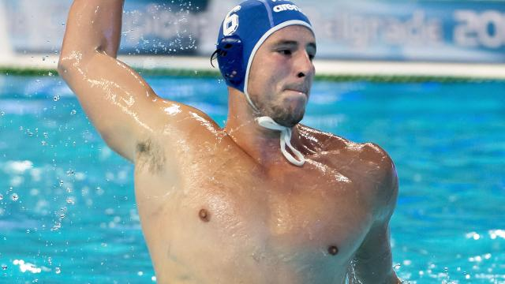
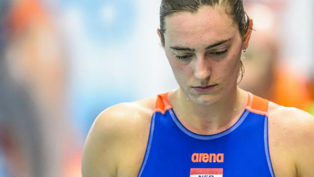

Waterpoloërs ook te sterk voor Kazachstan op OKT

De Nederlandse waterpoloërs hebben maandag ook hun tweede wedstrijd bij het Olympisch Kwalificatietoernooi (OKT) in het Italiaanse Triëst gewonnen. De ploeg van bondscoach Robin van Galen was met 8-5 te sterk voor Kazachstan.
Lees meer
Waterpolomannen winnen ook laatste oefenduel voor OKT

De Nederlandse waterpolomannen hebben ook hun laatste oefenwedstrijd in voorbereiding op het olympisch kwalificatietoernooi (OKT) winnend afgesloten.
Lees meer
Van der Sloot vreest 'enorme terugslag' waterpolo door missen Rio

Oranje-speelster Sabrina van der Sloot vreest dat het mislopen van de Olympische Spelen in Rio de Janeiro grote gevolgen heeft voor de Nederlandse waterpolosters.
Lees meer
Waterpoloster Smit was desnoods 'in onderbroek' naar Spelen gegaan

Het mislopen van de Spelen in Rio de Janeiro kan op termijn nadelige gevolgen hebben voor de waterpolovrouwen, maar daar was aanvoerster Yasemin Smit zaterdag na de uitschakeling op het Olympisch Kwalificatietoernooi (OKT) niet mee bezig.
Lees meer